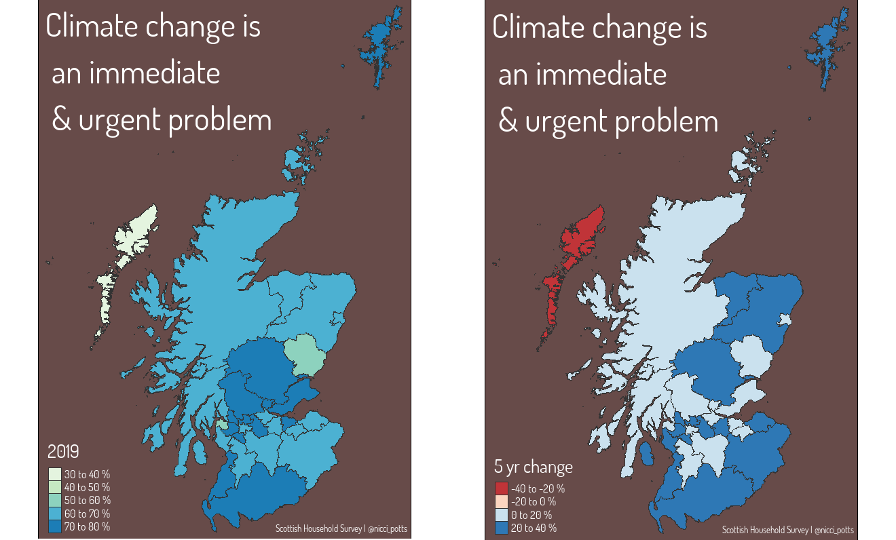
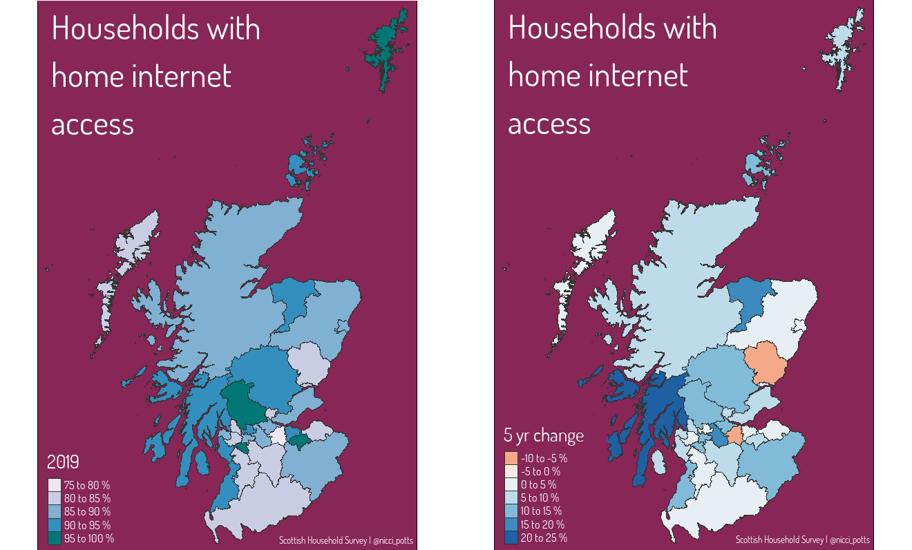
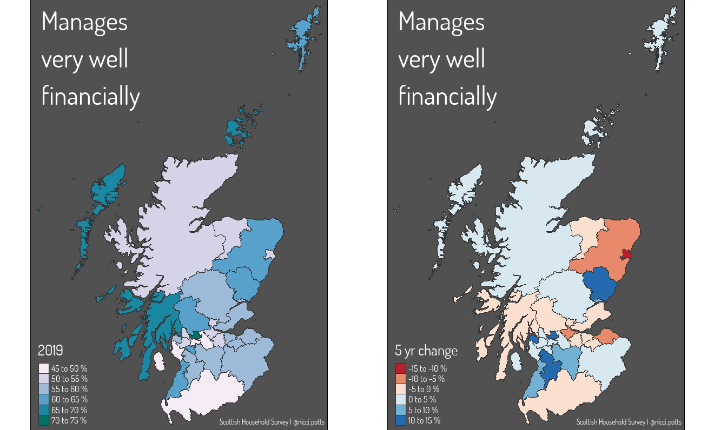

Mapping social survey data

In this post I will breakdown creating maps from survey data in R, particularly focused on the Scottish Household Survey.
The Scottish Household Survey (SHS) is an annual, cross-sectional survey run by the Scottish Government. It provides detail on the composition, characteristics, attitudes and behaviour of private households and individuals. The SHS asks questions of a random sample of people in private residences in Scotland. Its large sample size allows analysis of all Scotland’s 32 local authorities.
There are multiple topics included in the survey, these are:
- demographics
- housing
- neighbourhoods
- economic activity
- finance
- internet
- physical activity
- local services
- environment
- volunteering
- culture
- childcare
You can find out more information about the Scottish Household Survey on the Scottish Government website.

Downloading & importing the data
Pretty much everything I do in R starts with loading the
tidyversepackage.
- I want to explore the differences between local authorities for some of these topics. I, therefore, need a shapefile for the Scottish local authority boundaries.
Don’t worry if you haven’t used shapefiles in R before, it’s really not very scary!
Local authority shape files can be downloaded from Improvement service spatial data hub.
To read these files install and load the sf and rmapshaper packages. sf to read the shapefiles and rmapshaper to simplify the shapes for quicker rendering.
LALayer <- st_read("data/pub_las.shp", layer= "pub_las") #import data
LALayer <- st_transform(LALayer, "+init=epsg:4326") # convert to coordinate system
SimpleLA <- ms_simplify(LALayer) # simplify shape for quicker loading
I’m then going to use the tmap package to do a quick check that the shape files have loaded OK.
tm_shape(SimpleLA) +
tm_polygons()
Now that I am happy with my grey map of Scotland with all 32 local authorities outlined I am going to download the SHS data.
- Scotland’s Household Survey data can be downloaded from the Scottish Household Survey data explorer.
The Shiny App has all the data from the survey broken down by topic and questions. The data has been cut in various different ways, often by sex, areas of deprivation, and age.
I’m going to look at three topics:
- finances
- climate change
- internet access
I downloaded the csv files from the ‘Data’ tab of the Shiny App (question 1 from topics 6, 7, and 10) then read them into R.
T6Q1 <- read_csv("data/topic6question1.csv")
T7Q1 <- read_csv("data/topic7question1.csv",
col_types = cols(`2015` = col_double(),
`2019` = col_double()))
T10Q1 <- read_csv("data/topic10question1.csv",
col_types = cols(`2015` = col_double(),
`2019` = col_double()))

Wrangling the data
Ultimately I want to merge the SHS data with the local authority shapefiles, to do that a wee bit of data wrangling is required! First I’m going to rename the Council column to match the shapefile column of local authority names. I then renamed the two column years I want to use - this isn’t necessary I just find it easier to work with character variables!
T6Q1 <- T6Q1 %>% rename("local_auth" = Council,
"twenty19" = `2019`,
"twenty15" = `2015`)
T7Q1 <- T7Q1 %>% rename("local_auth" = Council,
"twenty19" = `2019`,
"twenty15" = `2015`)
T10Q1 <- T10Q1 %>% rename("local_auth" = Council,
"twenty19" = `2019`,
"twenty15" = `2015`)
Then I’m going to change the spelling of a few local authorities to match the spelling in the shapefiles.
T10Q1 <- transform(T10Q1, local_auth = sub("&", "and", local_auth))
T10Q1 <- transform(T10Q1, local_auth = sub("Edinburgh, City of", "City of Edinburgh", local_auth))
T10Q1 <- transform(T10Q1, local_auth = sub("Na h-Eileanan Siar", "Eilean Siar", local_auth))
Now my data is ready for me to investigate and start mapping!
Prior to transforming the SHS data, I converted the shapefile into a dataframe then used
distinct()to get the list of local authorities and their spelling.
For my first map I want to see what proportion of each local authorities population agree that climate change is an immediate and urgent problem. I also want to see how perceptions have changed over time - I’m expecting to see an increase in people viewing climate change as a problem over a 5 year period.
T10Q1_df1 <- T10Q1 %>%
filter(X3 == 'Climate change is an immediate and urgent problem') %>%
mutate(fiveyrdiff = twenty19-twenty15)
In the second map I’m interested in knowing what proportion of each local authority have access to home internet. Again, I want to see how this has changed over 5 years. Given the Scottish Government’s recent initative to increase broadband in rural areas of Scotland, I’m expecting to see lower internet access in the more rural local authorities.
T7Q1_df1 <- T7Q1 %>%
select(local_auth, twenty15, twenty19, `Internet Access`) %>%
filter(`Internet Access` == 'Yes') %>%
mutate(fiveyrdiff = twenty19-twenty15)
For the final map I only downloaded data for those who had responded that they were managing well financially. And again I wanted to see how this has changed over time.
T6Q1_df1 <- T6Q1 %>%
select(local_auth, Status, twenty15, twenty19) %>%
mutate(fiveyrdiff = twenty19-twenty15)
The final stage of data wrangling, once I’m happy my dataframes have the parameters I want to map, is to merge these with the local authority shape files.
T6Q1_map <- merge(SimpleLA, T6Q1_df1, by= 'local_auth')

Creating the map
Now my data is downloaded, imported, and wrangled I’m ready to start making maps!!
For this blog I’m using the
tmappackage, if I was creating these maps for a Shiny App I’d use theleafletpackage instead due to the added interactive element.
To create the map for the 2019 data, I tell tmap what data I want to use, then add polygons defining the data and a palette.
tm_shape(T6Q1_map) +
tm_polygons(col = "twenty19",
palette = "PuBuGn",
title = '2019'
)
To map the five year difference, I just change the column name.
tm_shape(T6Q1_map) +
tm_polygons(col = "fiveyrdiff",
palette = "RdBu",
title = '5 yr change',
)
To switch to any of the other topics I’d just change the data under
tm_shape()to T7Q1 or T10Q1 - remembering to create a merged shape file for each topic!
One of the great things about tmap is it’s rooted in ggplot, which means there is lots of opportunity for customisation. As I’m creating multiple maps it’s easier to write a function with the layout settings.
map_theme2 <- function() {
tm_layout(
frame = TRUE,
bg.color = '#c95b0c',
" Manages \n very well \n financially",
title.color = 'white',
title.size = 3,
legend.bg.color = TRUE,
legend.frame = FALSE,
legend.title.color = 'white',
fontfamily = 'dosis',
legend.position = c("left", "bottom"),
legend.text.color = 'white',
legend.text.size = 0.7
) +
tm_credits(
"Scottish Household Survey | @nicci_potts",
position = c("right", "bottom"),
col = 'white',
size = 0.8,
align = 'right'
)
}
And then the complete code for the map is below.
tm_shape(T6Q1_map) +
tm_polygons(col = "twenty19",
palette = "PuBuGn",
title = '2019',
labels = c(
'45 to 50 %',
'50 to 55 %',
'55 to 60 %',
'60 to 65 %',
'65 to 70 %',
'70 to 75 %'
),
lwd = .25,
border.col = 'gray20'
) +
map_theme2()
There you have it! Six different maps from Scottish Household Survey data using one set of shapefiles and a couple of downloaded csv files! Maps are a great way of bringing data to life. For me, seeing a stark colour contrast between local authorities jumps out quicker than if I was looking at a bar plot of all 32 local authorities.
And having access to the depth of data about Scotland’s households builds a deeper understanding of the nation we live in and helps a range of sectors target their provision.
People’s perceptions on climate change or their access to internet may seem relevant to only very specific scenarios. However, socio-economic factors have wide ranging impacts. In the sporting context, the move towards online coaching delivery may equate to disproportionate access to information across local authorities. Or a push to get more people using active travel may have greater impact in local authorities more concerned about climate change.
Summary image by Annie Spratt on Unsplash